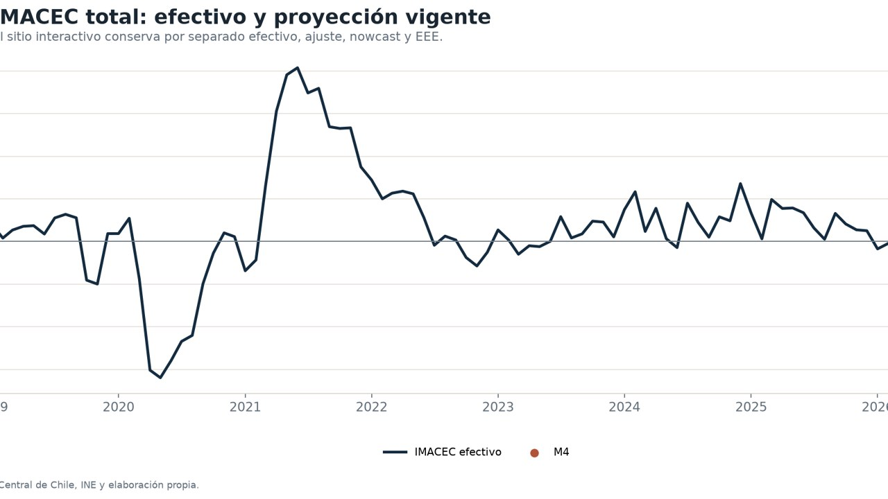

Actividad económica
Nowcasting de actividad económica en Chile
Monitor mensual del IMACEC total y no minero que avanza desde la EEE y un AR(1) provisional hacia M4 experimental, M8P INE y la evaluación con el dato efectivo.
RIMACECNowcasting